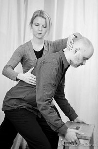

Introkurs i Alexanderteknikk med individuell time - helgekurs
- Kategori:
- Kurs med åpning for andre
Kurs med åpning for andre
Åpent for profesjonelle skuespillere. En viss åpning for andre utøvende kunstnere med relevant erfaring. Andre kunstnere må sende CV. - Dato:
- 14.06.2014 til 15.06.2014
- Start kl :
- 10:00
- Slutt kl :
- 13:00
- Pris:
- 500,-
- Adresse:
- Norsk Skuespillersenter, Welhavensgate 1, Oslo
 Alexanderteknikken er en metode som hjelper deg til å bruke deg selv bedre, fysisk og mentalt, og har siden F..M. Alexander utviklet den på slutten av 1800-tallet hjulpet mennesker med rygg- og nakkeplager til å bli smertefrie, idrettsutøvere og utøvende kunstnere med å øke sin prestasjonsevne og tilstedeværelse, og gitt et verktøy til dem som ønsker å lære å takle hverdagen med sunnhet og ro.
{kind=link}
Introkurs og individuell time
Kurset begynner med felles introduksjonsworkshop på 3 timer lørdag 14. juni fra 10.00 - ca. 13.00. Deretter får hver deltaker en 45 minutters oppfølgingstime i løpet av lørdag 14. eller søndag 15. juni, eller alternativt i påfølgende uke i kursholders egne lokaler.
Om Alexanderteknikk
Alexanderteknikk er ingen terapi- eller behandlingsform, men snarere en ferdighet du lærer i samarbeid med en kvalifisert lærer. Fysisk sett lærer du ingenting du ikke en gang kunne som barn.
Ved å observere barn i alderen 2 til 4 år, kan du se flotte eksempler på lett, smidig bevegelse og god holdning. Etterhvert som vi vokser opp utvikler vi vaner som å stramme i nakken, kollapse i ryggen og henge forover med skuldrene, vi spenner kontinuerlig i muskler som skal være fri, og slutter å bruke de musklene som egentlig skal holde oss i oppreist balanse på to føtter.
Ved å ta timer i Alexanderteknikk vil du bli mer bevisst dine fysiske og dertilhørende mentale vaner, og lære å eliminere disse. Slik legger du forholdene til rette for en sunn kropp nå og inn i fremtiden, slik at du kan leve bedre, lengre.
Om Elisabeth Dahl
Elisabeth Dahl er godkjent lærer i Alexanderteknikk gjennom STAT og NFLAT. Ved siden av sin privatpraksis i Oslo underviser hun i stemmebruk og teaterfag på NISS, og jobber som freelanceskuespiller.
”Alexanderteknikk var det eneste som hjalp meg med de kroniske korsryggplagene jeg hadde i 20-årene, og har hatt en enorm innvirkning på hvordan jeg bruker stemmen som skuespiller. Teknikken hjelper meg med å takle freelanse-tilværelsen og livet generelt med økt grad av ro og tilstedeværelse, og har gitt meg større fleksibilitet og kreativitet som skuespiller. Den er i Alexanders ord en praktisk livsfilosofi; a technique for the act of living!"
Elisabeth har eget studio på St. Hanshaugen, men introkurset foregår i Skuespillersenterets lokaler i Welhavensgate 1.
Mer info: www.alextek.no
Hva andre har sagt om Alexanderteknikk
“The Alexander Technique helped a long standing back problem, and to get a good night’s sleep after many years of tossing and turning.”
-Paul Newman
“I find the Alexander Technique very helpful in my work. Things happen without you trying. You get to be light and relaxed. You must get an Alexander Teacher to show it to you.”
- John Cleese
“The many benefits that the Alexander technique afforded us as actors included minimized tension, centeredness, vocal relaxation and responsiveness, mind/body connection, and about an inch and a half of additional height. By balancing and neutralizing tensions, I’ve learned to relieve as well as to avoid the aches and pain caused by the thousands of natural shocks that flesh is heir to.”
- Kevin Kline
“The greater the actor’s sensitivity and awareness of his body, the wider the range of choices or responses he can make for himself and his characters.”
- Kelly McEvenue, The Actor And The Alexander Technique
Pris for medlemmer av NSF: 450,-